Each scene shows one system, then how Dwarf Fortress handles the same thing. Frames come from the HUD mockup and from live renders on test/look-overhaul; each scene says which. Every Fantasia number is counted from the game's data on that branch at 941c867b. Every Dwarf Fortress line has its source under it; the ones marked check DF claim need confirming before you record.
Title and thumbnail
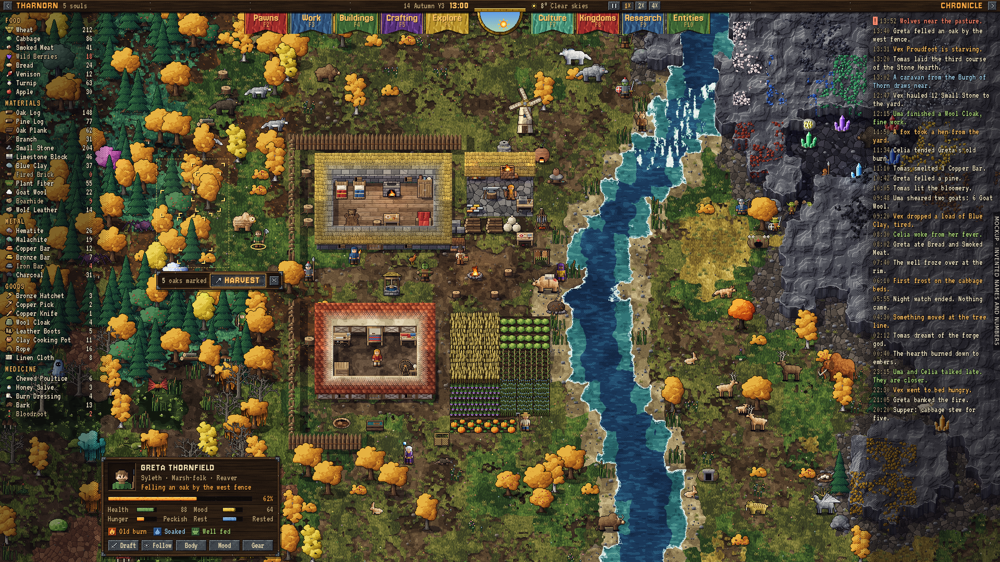
Dwarf Fortress?
Dwarf Fortress?
Titles to run in YouTube's title test
- MAINI'm making a colony sim better than Dwarf Fortress
- TESTIs my colony sim better than Dwarf Fortress?
- TESTDwarf Fortress wasn't enough, so I'm making my own
The caption is set in Jacquard 24, the blackletter of the main menu sign (Fantasia Blackletter in app.css). Spell it "than": the title is the first thing a detail-minded audience judges.
Script, about 9 minutes
Text on screen in the chronicle's style, no voice. Hold each card for about 4 seconds plus a second per line. Amber is a figure; the green cards are the Dwarf Fortress side, shown after the Fantasia cards in each scene. Labels: HUD mockup is a still from the mockup, which the live game gets through #218; test branch is a render of the live game; to record has no frame yet.
The colony at midday, slow pan from the fields to the river; the chronicle scrolling on the right.
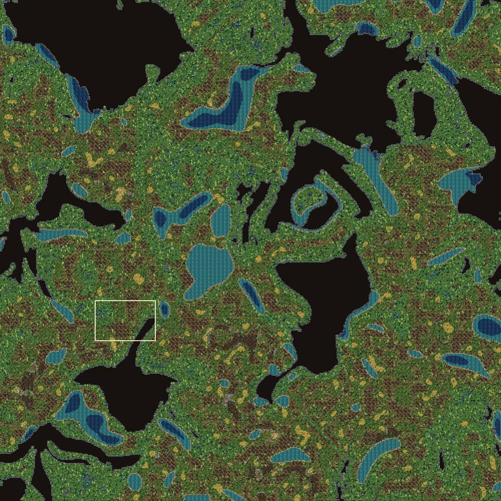
New game: the five founders appear on the map; open each one's Status tab to their culture and home kingdom, then the Culture screen (F7).
generateColonyPawns(pool, 5), generateCulturePool (15–25), WORLD_KIN_PLAN in Pawns.ts.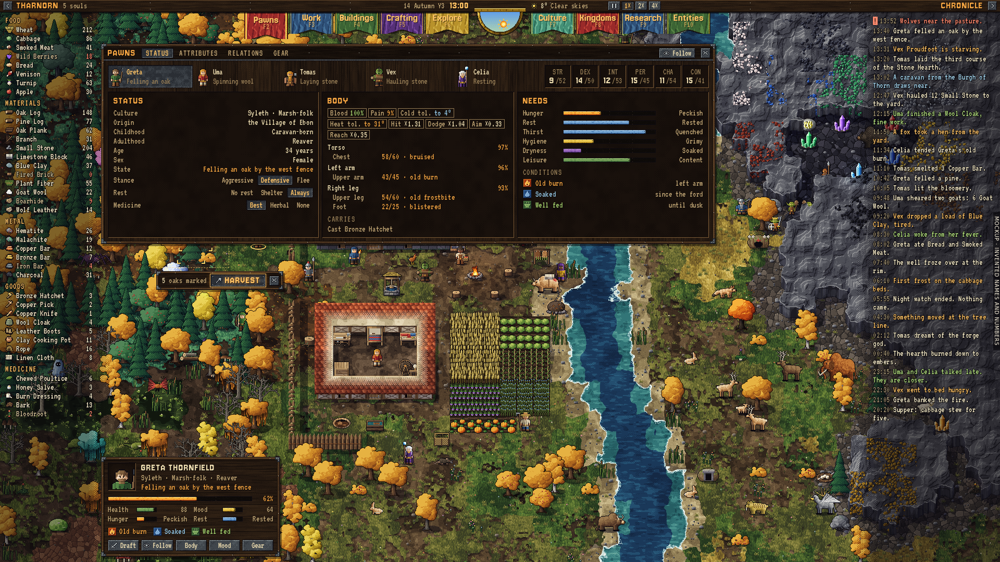
Pawns window, Status tab: culture, origin, childhood, adulthood. Click through the five colonists.
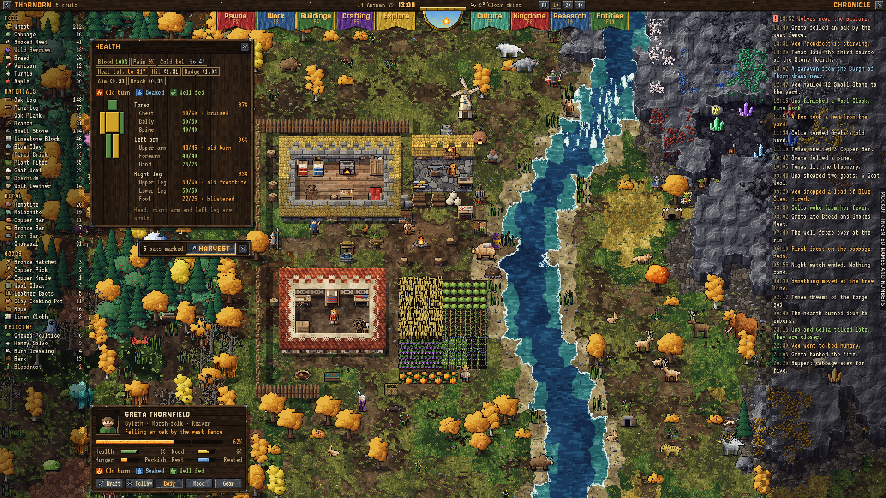
Health window: the body map, then hover the chest, the burned arm, the frostbitten leg.
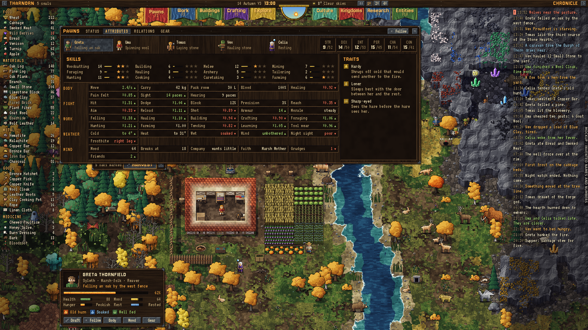
Pawns window, Attributes tab, hover a few rows.
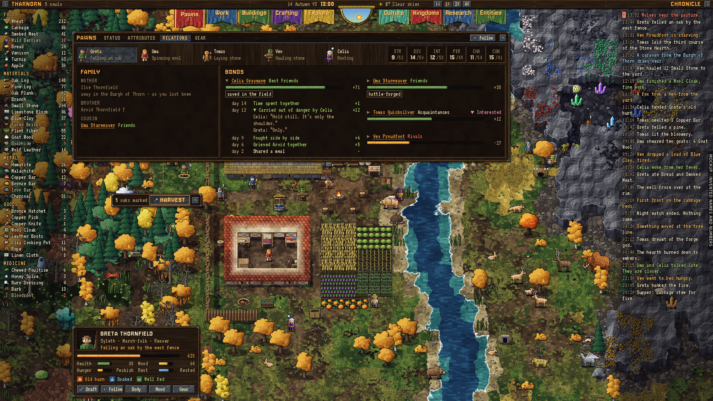
Pawns window, Relations tab; open the bond with the "carried out of danger" memory.
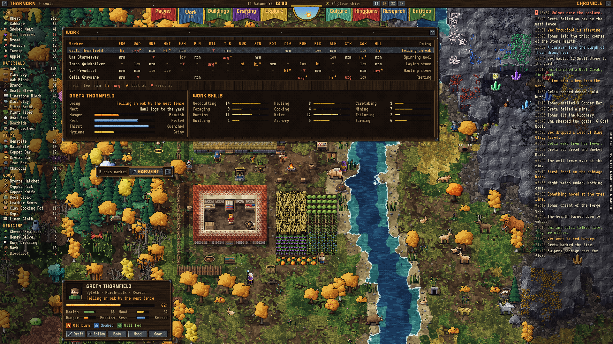
Drag a box over five oaks: they highlight and HARVEST appears; confirm. Then the Work window with priorities.
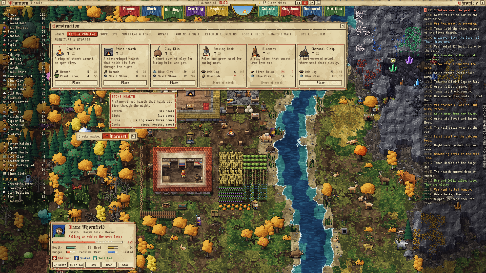
Build window, Fire & Cooking, hover the Stone Hearth; then the Crafting screen (F5) scrolling a recipe list.
record on test/look-overhaul
Research screen, open Tin Smelting, then scroll to Runic Inscription and Mythic Attunement.
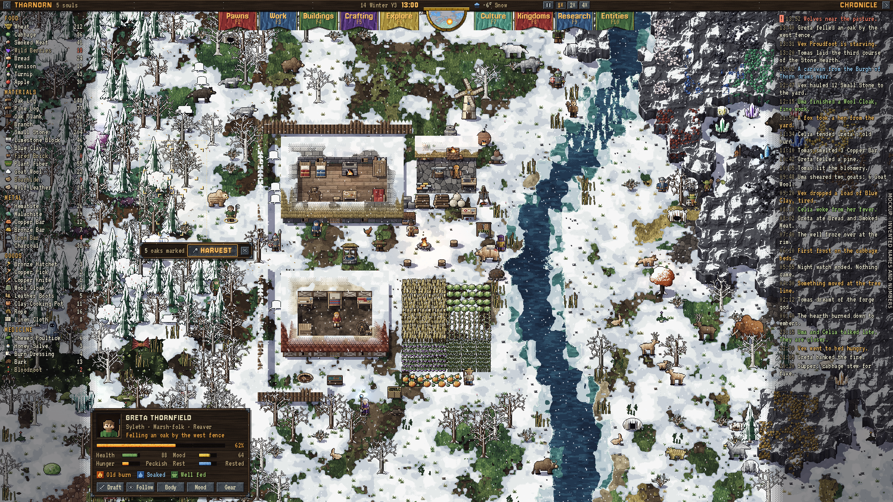
The same colony in rain, then snow; the well frozen over in the chronicle.
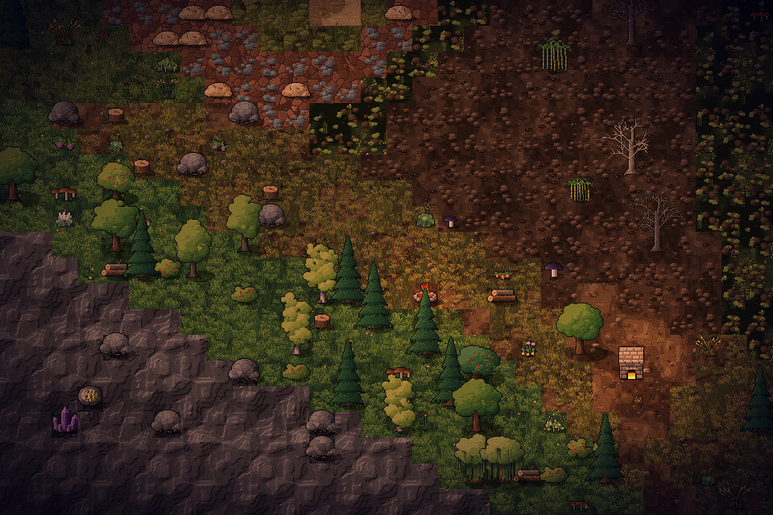
Dusk to night on the live map with the lighting pass: the hearth and campfire light the yard.
record on test/look-overhaul
Kingdoms screen: one kingdom open with its leader, history and famed items; then a caravan arriving on the map.
record on test/look-overhaul
The chronicle line "Wolves near the pasture", the pack on the map, draft two colonists, the fight, then the wounds in the Health window.
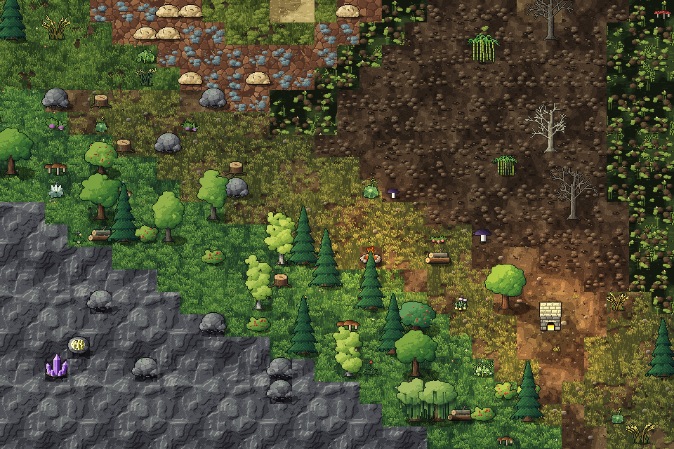
Pull back over the whole colony at midday, then the same view at dusk.
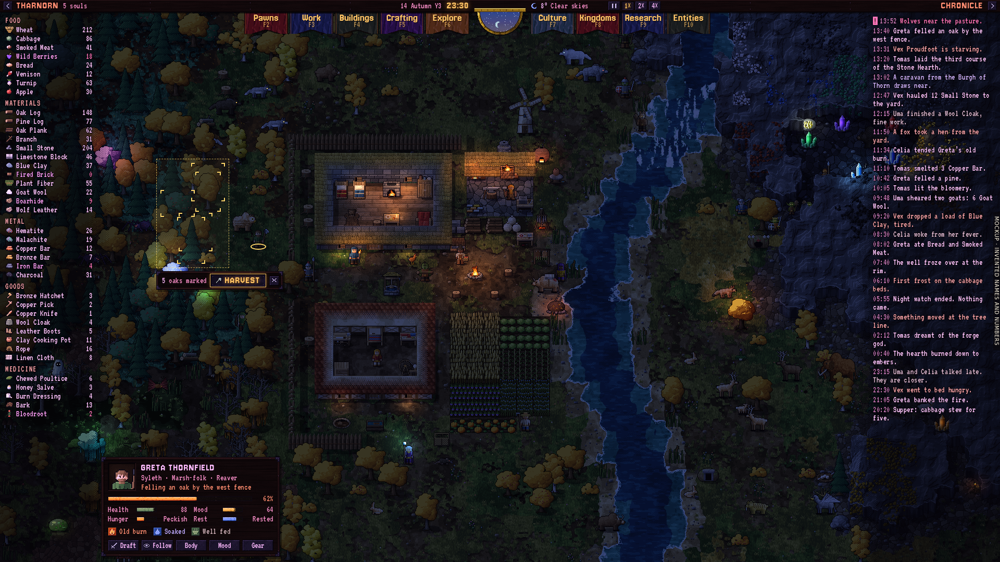
Night, the hearth lit; end card with the link.
Footage notes
Record every scene live on test/look-overhaul, with OBS at 60 fps and nearest-neighbour scaling. A headless recorder's encoder smears pixel art. The mockup stills here show the framing, not the footage.
Scenes 2 to 7 are built on the painted windows from the HUD mockup. Until #218 lands, the live build shows the current windows in those scenes; the script's cards stay true either way, since they come from the data and not from the window. Scene 10 needs the lighting pass (#217), and the map in every scene looks best with the terrain blend (#205) and the rock mass (#215) in.
Scenes 8, 11 and 12 have no frame yet: the research and kingdom screens and a fight have no mockup. A save with a raid due, a caravan near and research half done covers all three in one session.
Scene 13 says "playable today"; publish once the releases page carries a build with the new look, or the download shows a different game from the video.
Measuring interest
Before the video: a cheap first check
The video: decide the bar before upload
| Signal | Why it counts |
|---|---|
| Downloads and sign-ups at the link | The most direct evidence; nobody downloads a build or wishlists by accident. |
| Comments asking to play or follow | Intent, in their own words. |
| Subscribers per 1,000 views | Want for more, not just curiosity. |
| Average percentage viewed | Whether the tour holds attention past the hook. |
| Impressions click-through, and the title test | Whether title and thumbnail work, and which of the three hooks wins. |
Write the thresholds down before uploading, so the result can't be argued into a yes or a no afterwards.
Description, chapters, tags
I'm making [NAME], a fantasy colony sim built to go further than Dwarf Fortress in its own direction: a small colony of five founders with family out in a generated world, a research tree, and weather that reaches the body. Free and open source, on Windows and Linux. ▶ Play it / follow development: [link] 0:00 Better than Dwarf Fortress? 0:20 Five founders vs. seven dwarves 1:00 Colonists and their 467 traits 1:40 Bodies and wounds 2:20 116 stats vs. 19 attributes 3:00 Memories and bonds 3:40 Work and priorities 4:15 1,048 items and 777 recipes 4:50 A research tree 5:30 Seasons and weather 6:05 Day, night and firelight 6:40 Kingdoms, caravans and migrants 7:20 Creatures and raiders 7:55 Pixel art 8:20 Would you play this? #dwarffortress #colonysim #pixelart #devlog
Rules that matter more than tags
- The first two lines of the description carry "Dwarf Fortress", "colony sim", "fantasy" and the name; that's what shows in search.
- Chapters with keyword names become search entry points.
- Upload the full caption file, not only the burned-in text.
- Run the three titles in Test & Compare.
- Pin a comment with the link and the question you want answered.
- Post the same day to r/ColonySim and r/IndieDev; the art clip to r/PixelArt.
Tags: dwarf fortress, dwarf fortress like, colony sim, fantasy colony sim, colony builder, base building, procedural generation, pixel art, open source game, linux game, devlog, indie strategy game, the name.